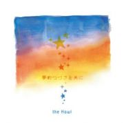

the Howl / 2nd MA [夢のつづきを共に] 2018.1.10 ON SALE!

大阪を拠点に活動するロックバンド『 the Howl 』
2015.01.09 より活動を開始。現在までに2 枚のSingle、1 枚のmini Album、iTunes 限定Single を自主制作でリリース！
活動歴は浅いがリリースの度にツアーにも力を入れ活動の幅は全国に広げている。
また大阪・福島にあるライブハウス「LIVE SQUARE 2nd LINE」をホームに自主企画にも力を入れており、企画の度にイベントは満員御礼。
活動開始から2 年のタイミングで開催された初となるONE MAN LIVE もSOLD OUT で幕を閉じた。
作詞作曲を手掛ける小倉海(Vo)。風貌からは想像が出来ない清らかな歌声と" 多幸感" 溢れる歌詞。
攻撃的なサウンドの中にある" 感謝" をテーマに作り出された楽曲の数々はシーンの中でも珍しくライブの度にファンも増加し若手シーンの中でも頭角を現す存在へ。
またサーキットイベントにも多数出演し、シーンの中で知名度を上げるなか、待望の全国流通版となるNew Mini Album『夢のつづきを共に』をEVANS RECORDS からリリース。
<収録曲>
1.「旅立つ友よ、」
2.「歌う先へ」
3.「ハレノカオリ」
4.「真夜中ファンタジー」
5.「Orion」
6.「ライブハウス」
DLCR-18012 / 定価:¥1,320(税込)